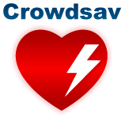

If this is an emergency call 911 immediately.
Defibrillator Tips
- Defibs are so simple that untrained 6th graders can use them.
- It is always better to try and get a defib than to do nothing.
- Learn where the nearest defib is at your place of work, home, and gym.
- Chance of survival drops 7-10% every min without defib. Hurry!
About the App
This app is a defibrillator mapping game. You play by updating and editing defibrillator listings and earning points. Unlock badges, move up the leaderboard, and occasionally win prizes.
We do our best to ensure quality data, but cannot make any guarantees about our app's data. It is pre-populated with 380 defibrillators from the City of Ottawa's open data, and then annotated and improved by app users like yourself.
Privacy Policy
All data collected is used solely for the purpose of the app. None of your information will be shared with third-parties. Your location is only submitted when you explicitly submit it for amending the location of a defibrillator. If you have any questions or concerns about your privacy do not hesitate to contact us.
App Creators
This app was developed with all the love by David Rust-Smith, Phil Vanstone, and Nick Breen. We hope to make heart health a fun and engaging topic, and save some lives.
If you would like to contact us please email David at david@smewbsites.com
Thank Yous
Thank you for using the app and participating in Heart Spark!! We would also like to the thank City Of Ottawa for their proggresive Open Data program, and thank you to the HUB Ottawa community for their support.
Data Providers
Data powered by Crowdsav, users like you, and the City of Ottawa.
